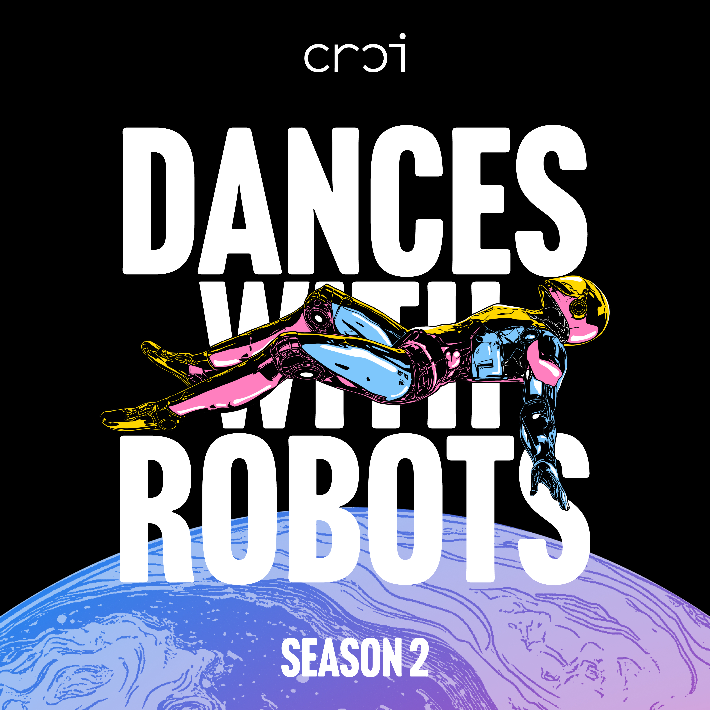

Two large planet-like spheres with pink and yellow swirled surfaces sit on either side of a flat black plane. Overlaid across the middle is a colorful illustrated humanoid robot in a reclining, dance-like pose, rendered in pink, yellow, and blue with visible mechanical joints and a helmeted head. Image by Kevin Ju

Dances With Robots Season 2- Teaser Trailer
SpotifyApple PodcastsDownload Audio
Season 2 is About to Launch! We were taught that space belongs to astronauts, engineers, and billionaires. But if space is part of all our futures, then who gets to shape it should belong to all of us. So what, if anything, can dancers do about it? In Season Two of Dances with Robots, host Ariane Michaud follows that question through conversations with astronauts, scientists, engineers, architects, journalists, and artists, exploring what happens when dance and embodied knowledge enter the conversation about space, technology, and the future. Along the way, one thing becomes clear: space isn't only a technological challenge. It's a social, cultural, and deeply human one. Dances with Robots is supported by The Brown Arts Institute at Brown University, and is co-produced by Consciously Produced.

Episode 1 - Brave New Worlds | Why Should Dancers Go To Space?
SpotifyApple PodcastsDownload Audio TranscriptEnter the Archive
What do dancers have to do with the future of space exploration? This season explores how movement research informs life in microgravity, how choreography structures astronaut training, and what happens when questions of access, capitalism, and imagination extend beyond Earth. If outer space is part of our shared future, who gets to shape it, who gets access, and what, if anything, can artists do about it? In the Season 2 premiere of Dances with Robots, host Ariane Michaud begins an eight-episode journey into the intersection of dance, embodiment, and outer space. Joined by Sydney Skybetter, founder of the Conference for Research on Choreographic Interfaces (CRCI); choreographer Kitsou Dubois; and planetary scientist Adeene Denton, she asks what artists, choreographers, and movers bring to these conversations.

Episode 2 - Who Is Space For? | Conquest, Care, and the Future Off-Earth
SpotifyApple PodcastsDownload Audio TranscriptEnter the Archive
Who gets to imagine humanity's future beyond Earth, and who gets left out? In Episode 2 of Dances with Robots, host Ariane Michaud sits down with Nahum, artist and founder of the Kosmica Institute, and interdisciplinary artist Sage Ni'Ja Whitson to pose a question the space sector rarely asks of itself: not why we go, but who the going is for. Space has always had gatekeepers. From the agencies and billionaires who set the agenda to the cultural assumptions we pack along with the cargo, the story of leaving Earth has mostly been written by a very few. Engaging with Afrofuturism and speculative performance, Nahum and Whitson work in a longer lineage of artists who insist that story can be told otherwise: that a future off-planet could be built on care, imagination, and collective responsibility rather than conquest. Because the question was never just who gets a seat on the rocket. It's what kind of future we're making once we're up there.
Episode 3 - How Do Humans Adaptto Space?
SpotifyApple PodcastsDownload Audio TranscriptEnter the Archive
How do our bodies adapt to an environment they were never designed for? In Episode 3 of Dances with Robots, host Ariane Michaud takes up one of the hardest problems of living beyond Earth: what microgravity does to the human body. She talks with Janna Kaplan and Vivek Pandey Vimal, researchers at the Ashton Graybiel Spatial Orientation Laboratory at Brandeis, while CRCI student associate Rishika Kartik speaks with aspiring aerospace physician Gitika Gorthi about how people relearn to move, balance, and care for their bodies without a reliable sense of down. The conversation runs from the lab's rotating room and its Multi-Axes Rotation and Tilt Device (MART), where subjects are spun and tilted until their sense of orientation gives out, through motion sickness, artificial gravity, and aerospace medicine, a field where research done for astronauts also reaches people on the ground who have lost their balance.